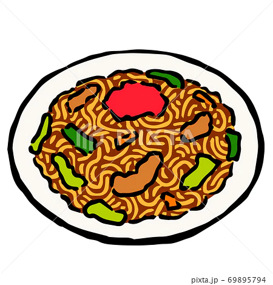

Yakisoba

Description
Here are the ingredients necessary to make the Japanese famous dish Yakisoba.
Ingredients
- Yakisoba noodles
- Yakisoba seasoning
- Vegetables of your choice
- Pork or beef meat
Steps
- Boil Yakisoba noodles
- Fry meat
- Put vegetables inside
- Put the noodles inside and pray